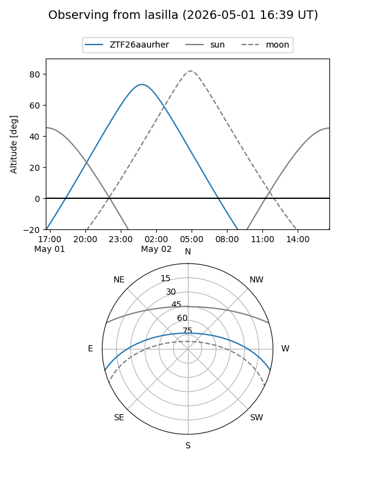
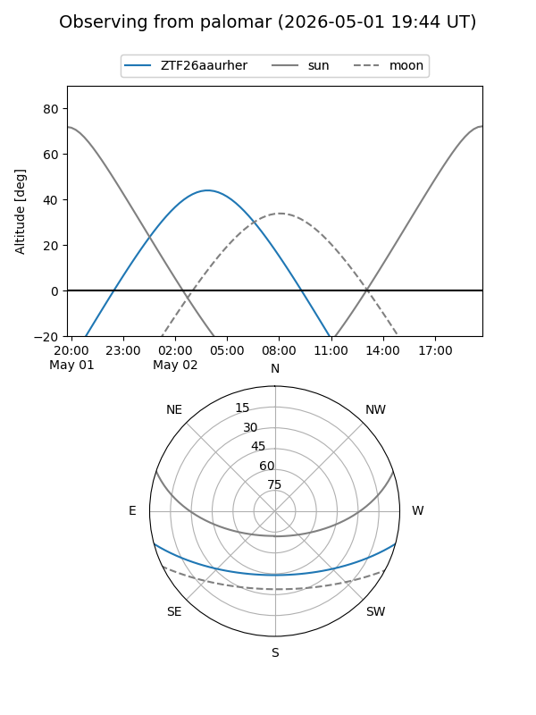

ZTF26aaurher
Target ZTF26aaurher at 2026-05-02 05:01
Aliases and brokers:
FINK: link
Lasair: link
ALeRCE: link
alt names
ZTF26aaurher (ztf,fink_ztf)
Coordinates:
equatorial (ra, dec) = 160.9373,-12.47429
equatorial (HMS+DMS) = 10:43:44.94,-12:28:27.44
galactic (l, b) = (260.7691,+39.72225)
Flags:
Photometry:
last ztfg=18.83
1 ztfg detections
Lightcurve
Visibility


Additional plots